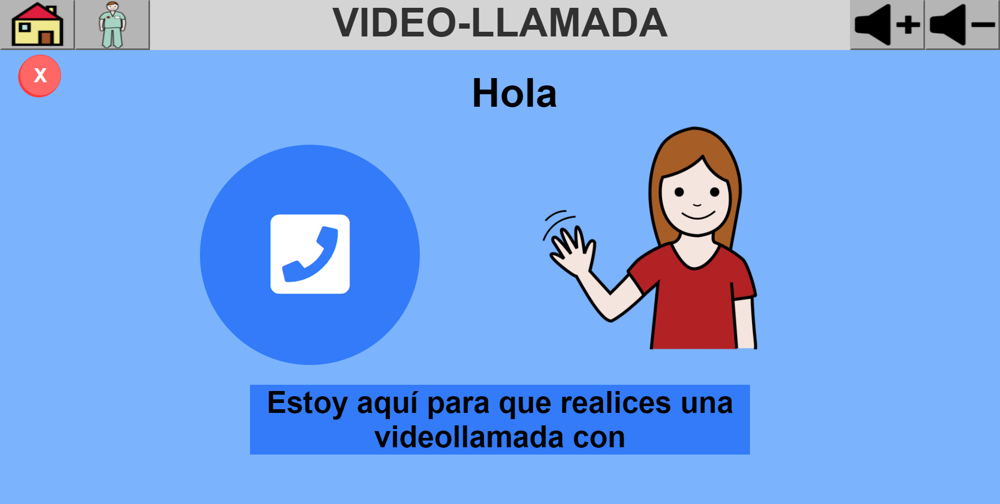
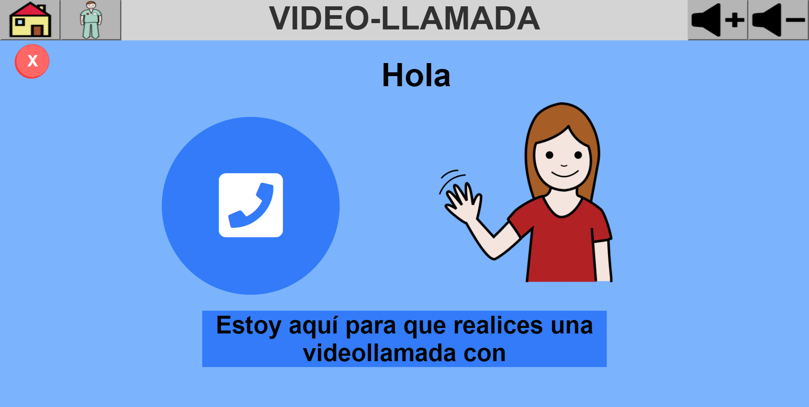

Interfaz Accesible en el ámbito de la Robótica Asistencial
Trabajo de Fin de Grado realizado para la Universidad Carlos III, el trabajo consistía en el diseño, prototipado y posterior implementación de dos interfaces completamente funcionales y accesibles, estas han sido montadas en un robot que asiste tanto a los residentes como al personal en la residencia Vitalia Teatinos (Málaga, España). Obteniendo una calificación de 9.9 sobre 10.
2021
- Tu corazón es libre, ten el valor de hacerle caso -

 
